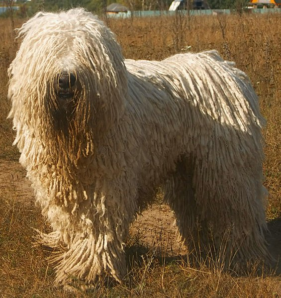

A komondor és a kuvasz
Legrégebbi megmaradt állatfajtánknak talán a kuvasz és a komondor tekinthető. E nagytermetű, erős és bátor fehér színű kutyák kísérői, terelői, őrzői lehettek már a honfoglaló magyarok nyájainak és gulyáinak, és valószínűleg jobban hasonlítottak jelenlegi formájukra, mint például ősi szarvasmarhánk a magyar szürkére. A kuvaszt elsősorban vadászatra és terelésre, a komondort őrzésre használták. Mindkettő megvesztegethetetlen, bátor, kemény kutya, amely már csak mérete folytán is szeretetteljes, de határozott gazdák kezébe való.
A magyar vizsla

A magyar vizslát a XIV-XV. században a pannon kopó egyes változataiból alakították ki, az apróvad vadászatára. A török uralom alatt kereszteződött a törökök sárga kutyáival, stabilizálódott a színe, és egyre homogénebb lett. Az 1900-as évek elejére azonban háttérbe szorult, és úgy lecsökkent az állománya, hogy nemzeti összefogással sikerült csak ismét életre kelteni ezt a kiváló állatot. Az 1930-as években drótszőrű változatát is kitenyésztették.
A puli, a pumi és a mudi

A puli, a pumi és a mudi igazi terelő munkakutya, amelyek a megváltozott körülmények ellenére ma is alkalmasak erre a munkára. Ennek ellenére alig látunk a mai juhászok oldalán tisztavérű pulit. A másik két fajta gyakrabban előfordul. Legtöbbjük azonban ma már házi kedvenc, vagy a porták éber őre.
A magyar agár

Legősibb vadászkutyánk a magyar agár, amelyet szintén keletről hoztak magukkal a magyar törzsek, évszázadokon át a lovas vadászatok nélkülözhetetlen szereplője volt. A XIX. században erősen átkeresztezték a fajtát az akkor divatos angol agárral, amely küllemét finomította, de belső tulajdonságai, ellenálló képessége kitartása megmaradt. A második világháború után csaknem teljesen eltűnt, nehezen fellelt néhány egyedéből tenyésztették vissza.
Az erdélyi kopó
Az erdélyi kopó elődje a pannon kopó a történelmi Magyarország területén alakult ki a magyarok sárga vadászkutyáiból, amelyek az eredetileg itt élő népek kutyáival keveredtek. A második világháborút követően hasonlóan a magyar agárhoz üldözött fajta lett, csaknem eltűnt, de sikerült néhány egyedet kimenteni Erdély területéről, és újraéleszteni a fajtát.